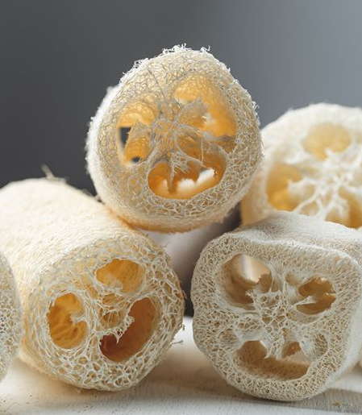
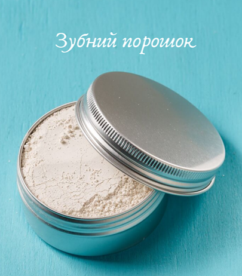
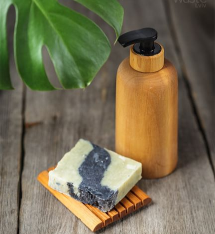

ZEROWaste
Громадська організація
Наші основні напрямки роботи
Статті
Що робити з рештками їжі та пакуванням?
Компостування та переробка
ЕкоКрамниця

Металева трубочка
30,00 грн

Люфа
40,00 грн

Зубний порошок
50,00 грн

Дерев'яна мильничка та диспенсер
380,00 грн
Всі товари